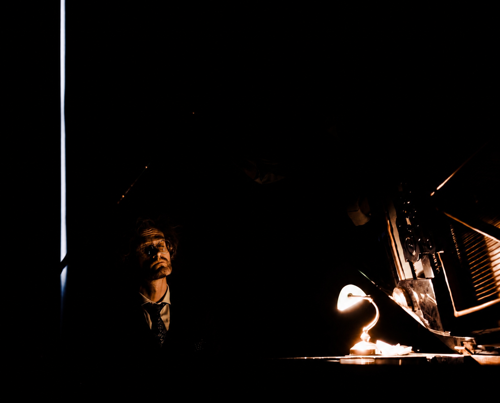

Composer & pianist
WARSAW, POLAND
ABOUT
KUPIDURA is a minimalist composer & pianist. His music is built around intimacy, repetition and atmosphere, moving between contemporary classical and cinematic sound. Each piece unfolds like a small, unfinished scene.
READ MORELIVE
PRESS
Press materials, selected photographs and downloadable resources for media, venues and collaborators.


